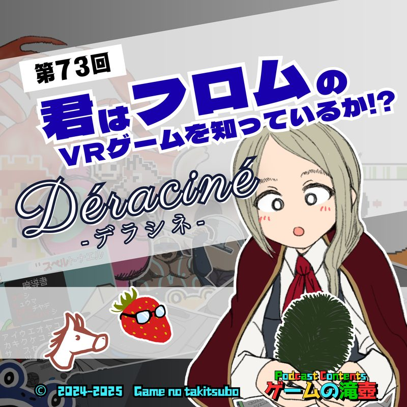

エピソード一覧へ

君はフロムのVRゲームを知っているか！？ Déraciné（デラシネ）
初代PSVRの名作アドベンチャー、Déraciné（デラシネ）についてネタバレありで話します！
エルデンリング等で有名なフロム・ソフトウェア製、時間停止中に妖精さんがいたずらをする刺激的なゲームです！！
GAMES & KEYWORDS登場ゲームタイトル・キーワード
CHAPTERSチャプター
- 00:00オープニング
- 02:09デラシネ前半
- 14:54CM
- 15:55デラシネ後半（ネタバレ注意）
- 34:56まとめ（ネタバレ注意）
- 39:41滝壺3分ゲーム紹介（浅利七海のSTAR FISHING）
- 48:02おたより紹介
- 1:24:37アートワーククイズ
- 1:34:43エンディング